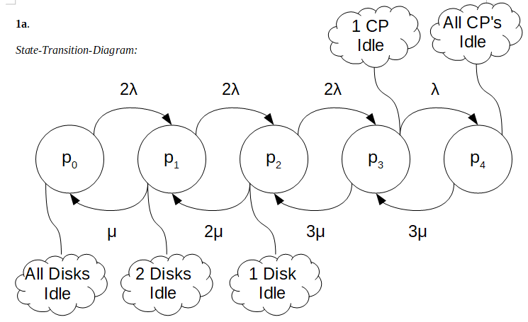

Closed-Queue Server System Analysis
Computer Performance Analysis - San Francisco State University Fall 2016
In this project, I study queuing models of closed systems. In this sample, I calculate the processor utilization and the response time for the system given in figure 1 below. This multiprogrammed computer system, with 2 processors and 3 disks, processes 4 identical programs. Each program needs 10 CPU minutes. Also the disk service time is twice as long as the processor servce time, Sd = 2Sp.
With the given information, I calculate processor utilization and response time for two cases. I first look at the case where both processors are working. Then, I look at the case where one of the processors goes offline leaving only one active processor in the system. This table shows the Processor Utilization and Response Time (CPU minutes) for each case.
| 2 Processors | 1 Processor | |
|---|---|---|
| Processor Utilization | 0.5957 | 0.8308 |
| Response Time (CPU minutes) | 33.5758 | 45.6140 |
This diagram shows the different states of this system. In state p0, all four programs are either being served by one of the two central processors(CP) or they are waiting in the CP queue. In state p4, all four programs are either being serviced by one of the three disks or waiting in the disk queue. In states p1, p2, and p3, the programs are distributed between the CP's and disks in some combination according to the diagram. λ is the rate of a single CP finishing a job. And μ is the rate of a single disk finishing a job. I use this state transition diagram to create the system of balanced equations used in the following calculations.
Given: 2 CP's with speed Sp 3 Disks with speed Sd 4 Programs needing 10 CPU minutes each Sd = 2Sp Derived: λ = 1/Sp μ = 1/Sd = 1/2Sp ρ = λ/μ = 2 Balanced Equations: 2λp0 = μp1 → p1 = 2ρp0 = 4p0 2λp1= 2μp2 → p2 = ρp1 = 2p1 = 8p0 2λp2 = 3μp3 → p3 = (2/3)ρp2 = (4/3)p2 = (32/3)p0 λp3 = 3μp4 → p4 = (1/3)ρp3 = (2/3)p3 = (64/9)p0 p0 + p1 + p2 + p3 + p4 = 1 p0 (1 + 4 + 8 + (32/3) + (64/9)) = 1 p0 = 9/277 p1 = 4p0 = 36/277 p2 = 8p0 = 72/277 p3 = (32/3)p0 = 96/277 p4 = (64/9)p0 = 64/277 Up = p0 + p1 + p2 + (1/2)p3 = 9/277 + 36/277 + 72/277 + 48/277 = 165 / 277 Up ≈ 0.5957 2RUp = 4Tp R = 2Tp/Up = (2*10)/(165/277) = 5540/165 R ≈ 33.5758 CPU minutes
In this calculation, I first derive λ and μ from the given service times, Sp and Sd. From λ and μ I get ρ, the ratio of CP to disk service rates. In this case, ρ is 2.
Now using the state transition diagram above, I make a system of balanced equations to find the probabilities of being in each of the five states. I express the probabilities of each state in terms of p0. Then after solving for p0, I calculate the probabilities of being in each other state.
Using the state transition diagram, I determine the states where the CP's are active. Using the probabilities of being in each state, I find the processor utilization (Up = 0.5957). The total processor time required by 4 jobs is 4Tp where Tp is the processor time required by one of the programs. The total processor time delivered by two processors is 2RUp, where R is the response time. The total processor time delivered is equal to the total processor time required by the 4 jobs, 2RUp = 4Tp. Using this equality, I find the response time (R ≈ 33.5758 CPU minutes).